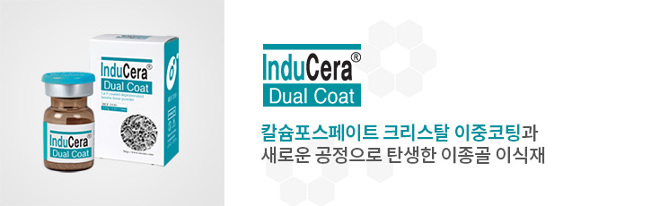
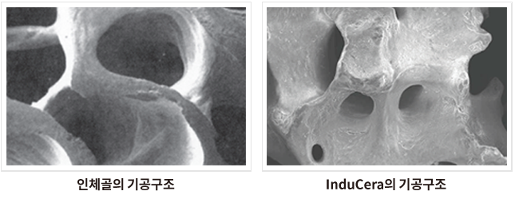
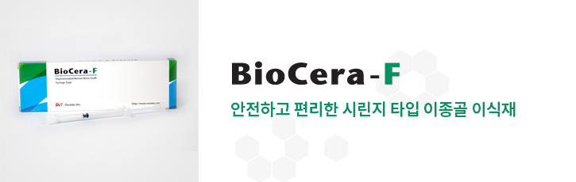
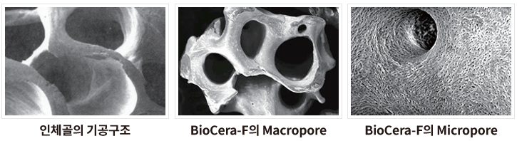
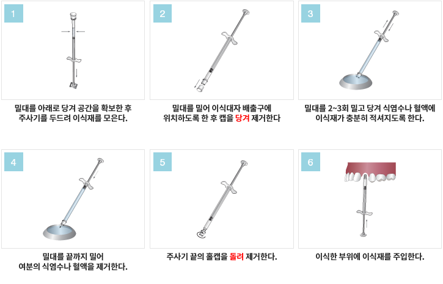
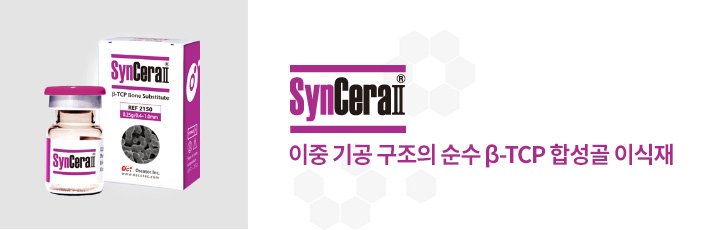
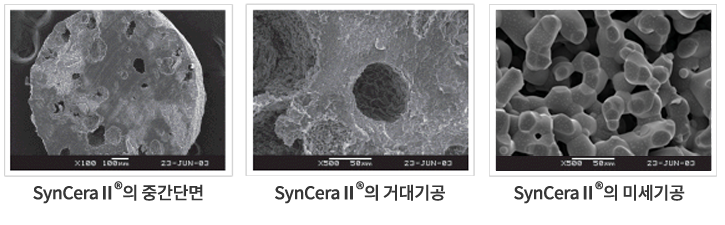
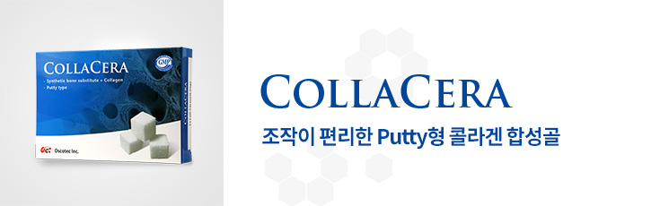
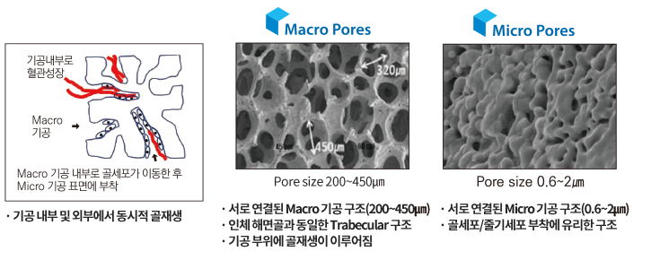

InduCera
제품의 개요 및 성분
InduCera는 생체 친화적인 칼슘포스페이트(Ca-P)를 이중 코팅한 송아지뼈를 원료로 하는 천연 무기질 재료입니다. 본 제품은 엄격한 제조공정에 따라 고도로 정제된 골전도성 무기질 재료로서 면역학적 거부반응이 없으며 형태 구조학적으로 인체의 골과 같은 구조를 지니고 있습니다.
InduCera의 bone matrix는 사람 해면골과 유사한 거대, 미세 다공구조를 가지고 있으며 상호 연결된 다공성과 천연 구조로 인해 이식 부위에 재혈관화가 이루어짐으로써 신생골의 형성과 성장을 촉진합니다. 또한 전하를 띈 Ca-P 코팅층은 세포와 반응성이 매우 높아 조골세포, 파골세포와 잘 결합함으로써 더욱더 신생골 형성과 성장을 촉진시킵니다.
제품의 안전성
· 원산지 : OIE(국제수역사무국)에서 인정한 BSE 안심 국가인 호주산 송아지 뼈를 사용합니다.
· 원재료 : EU 법안 지시문서에 따라 BSE로부터 안전한 부위인 송아지의 대퇴부에서 얻어진 100% 해면골 만을 사용합니다.
· 추적성(Traceability) : 농장사육에서 도축, 운송까지 엄격한 통제가 이루어집니다.
· 제조공정(Processing) : 바이러스 불활성화 공정과 유기물 제거 공정을 통해 천연골 무기질을 얻을 수 있습니다.
· 멸균 (Radiation Sterilization) : 이중포장으로 구성되어 있으며 방사선 멸균한 일회용 멸균 의료기기입니다.
인체의 골과 유사한 구조

· 원산지 : OIE(국제수역사무국)에서 인정한 BSE 안심 국가인 호주산 송아지 뼈를 사용합니다.
· 원재료 : EU 법안 지시문서에 따라 BSE로부터 안전한 부위인 송아지의 대퇴부에서 얻어진 100% 해면골 만을 사용합니다.
· 추적성(Traceability) : 농장사육에서 도축, 운송까지 엄격한 통제가 이루어집니다.
· 제조공정(Processing) : 바이러스 불활성화 공정과 유기물 제거 공정을 통해 천연골 무기질을 얻을 수 있습니다.
· 멸균 (Radiation Sterilization) : 이중포장으로 구성되어 있으며 방사선 멸균한 일회용 멸균 의료기기입니다.
제품사양
| Product | Model No. | Particle Size(mm) | Volume(g) |
|---|---|---|---|
| Inducera | 3001 | 0.25 ~ 1.0 | 0.15 |
| 3020 | 1.0 ~ 2.0 | 0.25 | |
| 3101 | 0.25 ~ 1.0 | 0.25 | |
| 3120 | 1.0 ~ 2.0 | 0.25 | |
| 3201 | 0.25 ~ 1.0 | 0.5 | |
| 3220 | 1.0 ~ 2.0 | 0.5 | |
| 3301 | 0.25 ~ 1.0 | 1.0 | |
| 3320 | 1.0 ~ 2.0 | 1.0 |

BioCera-F
제품의 개요 및 성분
BioCera-F는 청정지역 호주산 송아지뼈를 원료로 하는 천연골 무기질 재료입니다. 본 제품은 엄격한 제조공정에 따라 고도로 정제된 골전도성 무기질 재료로써 면역학적 거부반응이 없으며 형태 구조학적으로 인체의 골과 같은 구조를 지니고 있습니다. BioCera-F의 bone matrix는 사람 해면골과 유사한 거대, 미세 다공구조를 가지고 있으며 상호 연결된 다공성과 천연 구조로 인해 이식 부위에 재혈관화가 용이하게 이루어짐으로써 신생골의 형성과 성장을 촉진합니다.
제품의 안전성
· 원산지 : OIE(국제수역사무국)에서 인정한 BSE 안심 국가인 호주산 송아지 뼈를 사용합니다.
· 원재료 : EU 법안 지시문서에 따라 BSE로부터 안전한 부위인 송아지의 대퇴부에서 얻어진 100% 해면골 만을 사용합니다.
· 추적성 (Traceability) : 농장사육에서 도축, 운송까지 엄격한 통제가 이루어집니다.
· 제조공정 (Processing) : 바이러스 불활성화 공정과 유기물 제거 공정을 통한 천연골 무기질만으로 구성되어 있습니다.
· 멸균 (Radiation Sterilization) : 이중포장으로 구성되어 있으며 방사선 멸균한 일회용 멸균 의료기기입니다.
인체의 골과 유사한 구조

인체골과 유사한 다공 구조로 이식재 내부의 Macropore는 혈관 유입 및 형성에 도움을 주고, 이식재 표면의 Micropore는 조골세포 유착을 도와 신생골 형성을 촉진합니다.
사용방법
제품사양
| Product | Particle Size(mm) | Volume(cc) |
|---|---|---|
| S-015 | 0.25 ~ 1.0 | 0.15 |
| L-015 | 1.0 ~ 2.0 | 0.15 |
| S-025 | 0.25 ~ 1.0 | 0.25 |
| L-025 | 1.0 ~ 2.0 | 0.25 |
| S-050 | 0.25 ~ 1.0 | 0.5 |
| L-050 | 1.0 ~ 2.0 | 0.5 |

SynCera II
순수 β-Tricalcium Phosphate 합성골
골 전도력이 뛰어난 순수 베타 트리칼슘 포스페이트(β-TCP)로 만든 합성골 이식재입니다.
이중 기공구조의 골전도력
· SynCera II의 이중 기공 구조

SynCera II 의 이중 기공 구조 : SynCera II 는 거대기공과 미세기공이 골이식재 내외부에 혈관처럼 잘 발달되어 있습니다. 따라서 이식시 골이식재의 내/외부에서 동시에 골전도가 시작됩니다.
제품사양
| Product | Particle Size(mm) | Volume(g) |
|---|---|---|
| 2150 | 0.4 ~ 1.0 | 0.25 |
| 2110 | 1.0 ~ 2.0 | 0.25 |
| 2250 | 0.4 ~ 1.0 | 0.5 |
| 2210 | 1.0 ~ 2.0 | 0.5 |
| 2350 | 0.4 ~ 1.0 | 1.0 |
| 2310 | 1.0 ~ 2.0 | 1.0 |

COLLACERA
Feature
· 서로 연결된 Macro / Micro 이중 기공구조를 갖는 다공성 인산 칼슘 골이식재
· 60% Hydroxyapatite / 40% B-Tricalcium Phosphate + Type I Collagen
· 인체 해면골과 유사한 Trabecular 구조 및 안정적인 체내 골 흡수성
· 연결된 Macro 기공으로 혈관 성장과 골세포 이동이 가능
· 골격 표면의 Micro 기공 구조는 골세포 부착에 매우 유리한 구조
· 조직공학적 골재생에 관한 최적의 Scaffold
· 콜라겐에 의한 조직재생 및 지혈효과
Macro / Micro Pore Structure
Flexibility of COLLACERA
· 조작의 편리성 (수화시 다양한 형상 변형)
· 공간유지기능 및 신생골 형성기능